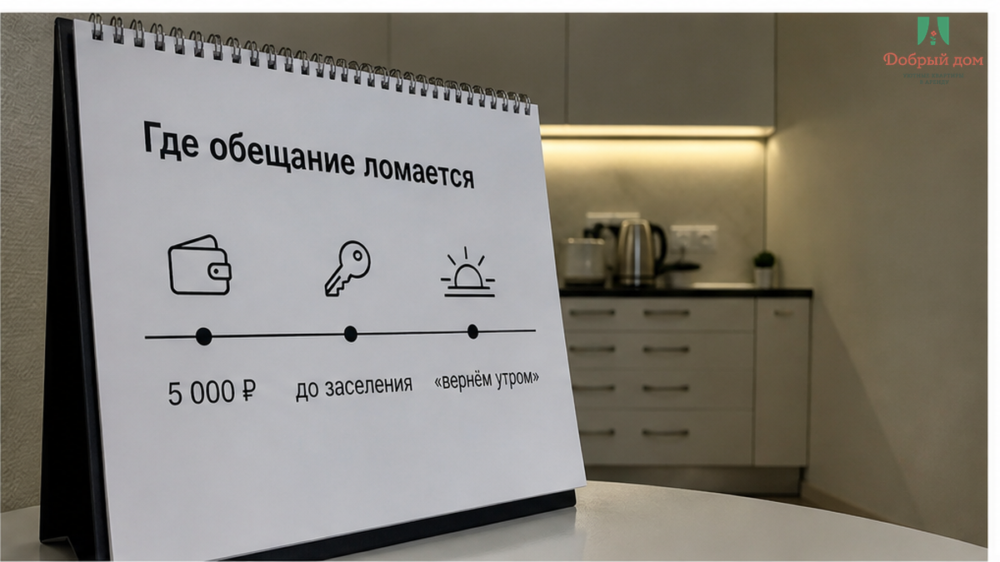
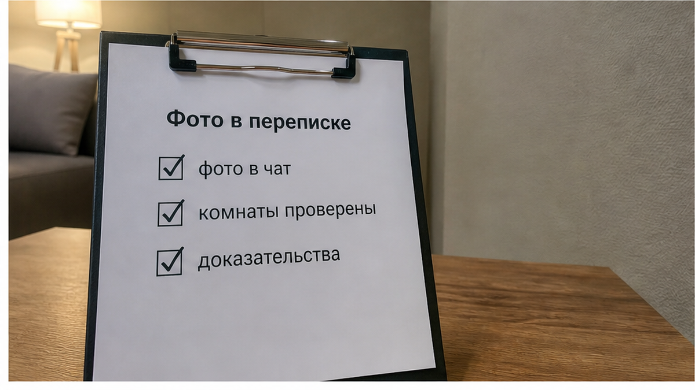
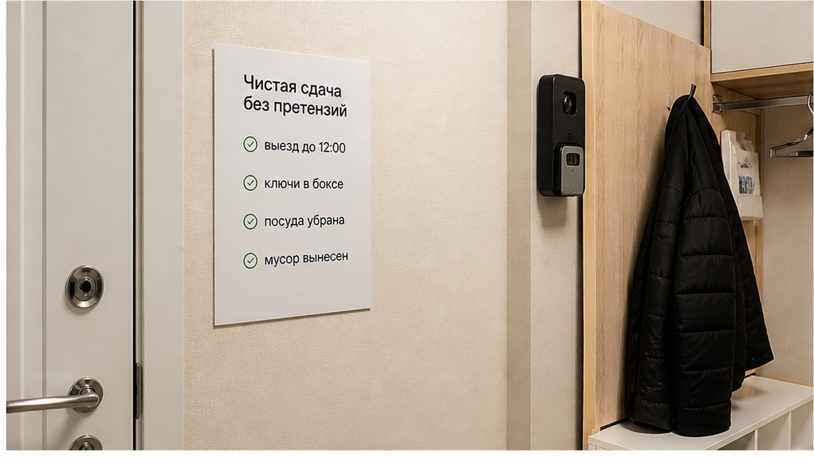
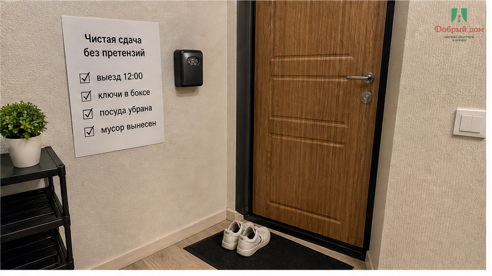
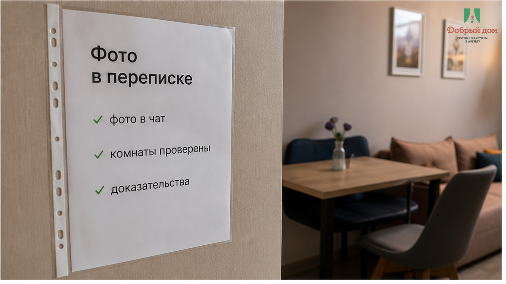

«Вернём утром после выезда» — это было написано в чате ещё до оплаты. Сентябрь, Тюмень, две ночи: часть поездки рабочая, часть — просто погулять. Пара отдельно перевела 5 000 ₽ залога. В полдень выехали как договаривались: ключи оставили в кейбоксе, посуду убрали, полотенца сложили, мусор вынесли. Сняли на телефон кухню, комнату и санузел, отправили фото туда же, в переписку. Не потому что заранее ждали ссоры. Потому что когда отдаёшь квартиру без личной встречи, спокойствие лучше оставить в чате.
Фото гостя не означают автоматически: «претензий нет». Квартиру всё равно принимает хост. Но они показывают, какой она была в момент выезда. Это уже не «мы вроде всё прибрали», а зафиксированная позиция. На следующее утро, то самое обещанное утро, приходит сообщение: «Залог вернём после уборки». И у пары сразу нет ни дня, ни часа, ни понимания, вернут ли все 5 000 ₽. Они уже в такси, чемоданы в багажнике, поезд ждать не будет. Претензии никто не назвал: ни скола, ни пятна, ни сломанного шкафа. Деньги не исчезли — они просто зависли. А конкретное обещание превратилось в ожидание без даты.
Я хост посуточной в Тюмени. Это «Добрый дом». Telegram · MAX.
Не «утром». Не «после уборки». А 5 000 ₽ без статуса.

До перевода было сказано: «Вернём утром после выезда». Это срок, привязанный к понятному событию. После выезда появилось: «Вернём после уборки». А это уже процесс, который гость не видит и не контролирует. Между двумя фразами не возникло ни претензии, ни расчёта, ни фото повреждения. Была чистая квартира, фото от гостя и ответ без календаря.
Сама уборка здесь не враг. После выезда квартиру нормально осмотреть: снять бельё, проверить плиту, сантехнику, то, что могло быть не видно сразу. Но уборка не отменяет срок, который назвали раньше. Если вы обещали вернуть утром, нельзя потом заменить утро фразой, когда деньги вернутся неизвестно. Не потому что хост обязательно хочет удержать залог. Потому что слово без даты перестаёт быть обязательством.

У меня правило короткое: брать деньги вперёд и не назвать день возврата при чистой сдаче — плохая работа. Если хост просит залог, он заранее должен сказать две вещи: когда деньги уйдут обратно и каким способом. На карту, по СБП, обратным переводом — неважно. Важно, чтобы это было сказано до ключей, а не после чемоданов.
«В какой день и на какой счёт вернёте залог, если квартира сдана чистой?»
Вот вопрос, который нужно задать до перевода. Он не конфликтный, не подозрительный и занимает одну строку. Если на него отвечают расплывчато, срока у вас фактически нет. В посуточной аренде нет единой фразы, которая сама по себе решает всё за всех. Стороны договариваются в договоре, оферте или переписке. Что зафиксировали — на то потом и можно опираться.
В этой истории гостям помогло хотя бы то, что они сделали всё аккуратно: выехали вовремя, оставили ключи, сняли квартиру на телефон. Про выезд, когда поезд ещё не скоро, а жильё уже сдано, я рассказывал здесь: выезд в 12:00, поезд в 16:30 — куда деть чемоданы между. А если ключи передаются без встречи, полезно заранее понимать механику: бесконтактное заселение посуточно в Тюмени.
Кейбокс удобен: не нужно подстраивать приезд и выезд под личную передачу ключей. Но он убирает одну важную точку — совместную приёмку квартиры. Никто не прошёлся вместе с гостем по комнатам и не сказал: «Принято». Значит, переписка и фото становятся не лишней формальностью, а нормальной защитой для обеих сторон.
Бывает и другой разговор: хост прямо сообщает, что удерживает деньги, и называет причину. Это уже спор, но хотя бы спор с предметом. Вот такая ситуация: перевёл залог за посуточную, на выезде сказали «не вернём». В нашем случае предмета нет вовсе. Квартира сдана, претензии не предъявлены, а залог повис. По ощущению это похоже на историю, когда отменили рейс, предоплату вернуть: деньги обещают вернуть, но календаря в обещании нет.
И вот вопрос для честного разговора: если квартира чистая, нормально ли держать 5 000 ₽ только потому, что «уборка ещё не закончилась»? Напишите мне в Telegram или MAX — там можно разобрать ситуацию по переписке, а не гадать по одному сообщению.

Залог в посуточной аренде не должен быть наказанием и не должен быть способом заработать на госте. Он нужен на редкие, но неприятные случаи: повреждения, потерянные ключи, последствия, которые действительно требуют расходов. Сумма сама по себе ещё ничего не говорит о честности хоста. Пять тысяч в этой истории — это конкретный случай, не универсальная норма для каждого гостя и каждой квартиры.

Важнее суммы три простые строки в чате. Первая — день возврата: например, до вечера дня выезда или на следующий день. Вторая — способ возврата: карта, СБП либо обратный перевод. Третья — условие: если квартира сдана чистой и подтверждённых нарушений нет, возвращается вся сумма; если претензия есть, сначала показывают фото и расчёт. Не надо писать полотно на десять экранов. Но эти три строки снимают большую часть будущего напряжения.
Гость часто внимательно выбирает район, кровать, парковку, бесконтактное заселение. А про залог спрашивает в последний момент — когда уже понравились фотографии и хочется быстрее закрыть бронь. Именно тогда и надо притормозить на минуту. Не для того, чтобы подозревать каждого. Чтобы потом не сидеть в поезде с вопросом, который можно было задать до перевода.

Сначала срок возврата залога. Потом перевод. Не наоборот.
Когда день и способ возврата названы заранее, уборка остаётся обычной уборкой. Гость знает, к какой дате вернуться с вопросом, а хост знает, что обещание записано. Когда даты нет, любое «после уборки», «чуть позже» или «завтра напишем» легко растягивается в тишину. Не обязательно из злого умысла. Но результат для гостя один: его деньги живут где-то отдельно от него.
Наш вывод простой. Залог без даты возврата — как чемодан в камере хранения без номерка: он вроде ваш, но забрать его в нужный момент нечем.
Если планируете поездку в Тюмень и хотите заранее письменно проговорить залог, выезд и все условия: